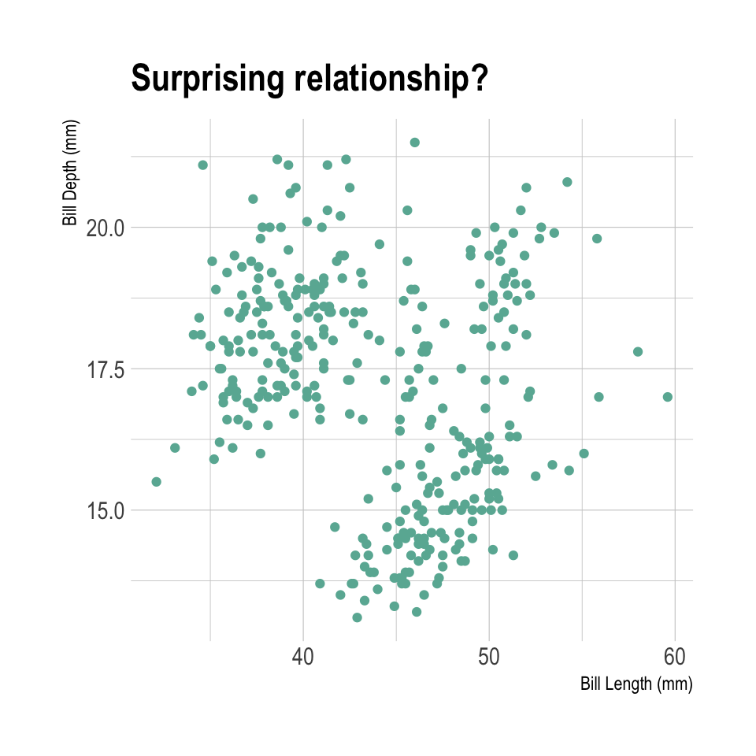
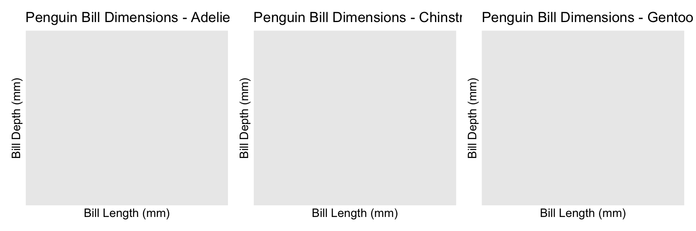

Show the code
# load the tidyverse
library(tidyverse)
library(hrbrthemes) # ipsum theme for ggplot2 charts
library(patchwork) # combine charts togetherThis document offers a straightforward analysis of the well-known penguin dataset. It is designed to complement the Productive R Workflow online course.
You can read more about the penguin dataset here.
Let’s load libraries before we start!
# load the tidyverse
library(tidyverse)
library(hrbrthemes) # ipsum theme for ggplot2 charts
library(patchwork) # combine charts togetherSome text in your quarto doc.
avg_height <- (4 + 4 + 7) / 3The avg is 5
this is a warning!
The dataset has already been loaded and cleaned in the previous step of this pipeline.
Let’s load the clean version, together with a few functions available in functions.R.
# Source functions
source(file="functions.R")
# Read the clean dataset
data <- readRDS(file = "../input/clean_data.rds")
Now, let’s make some descriptive analysis, including summary statistics and graphs.
What’s striking is the slightly negative relationship between bill length and bill depth:
data %>%
ggplot(
aes(x = bill_length_mm, y = bill_depth_mm)
) +
geom_point(color="#69b3a2") +
labs(
x = "Bill Length (mm)",
y = "Bill Depth (mm)",
title = paste("Surprising relationship?")
) +
theme_ipsum()
It is also interesting to note that bill length a and bill depth are quite different from one specie to another. This is summarized in the 2 tables below:
data %>%
group_by(species) %>%
summarise(average_bill_length = mean(bill_length_mm, na.rm = TRUE))
data %>%
group_by(species) %>%
summarise(average_bill_depth = mean(bill_depth_mm, na.rm = TRUE))# A tibble: 3 × 2
species average_bill_length
<chr> <dbl>
1 Adelie 38.8
2 Chinstrap 48.8
3 Gentoo 47.5# A tibble: 3 × 2
species average_bill_depth
<chr> <dbl>
1 Adelie 18.3
2 Chinstrap 18.4
3 Gentoo 15.0Now, let’s check the relationship between bill depth and bill length for the specie Adelie on the island Torgersen:
# Use the function in functions.R
p1 <- create_scatterplot(data, "Adelie", "#6689c6")
p2 <- create_scatterplot(data, "Chinstrap", "#e85252")
p3 <- create_scatterplot(data, "Gentoo", "#9a6fb0")
p1 + p2 + p3